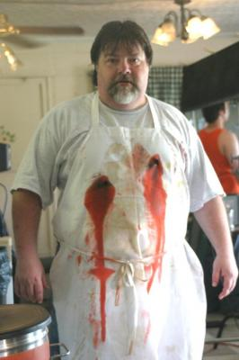

Cocinero
 De: La Frikipedia, la enciclopedia extremadamente seria.
De: La Frikipedia, la enciclopedia extremadamente seria.
 Esta profesión también tiene sus momentos divertidos.
Se denomina cocinero a la "persona" que cocina, evidentemente para otros por "oficio y profesión" o por no encontrar nada mas y no haber estudiado mucho. Según sus años de pringe y funciones se establece la siguiente jerarquía, de menor a mayor responsabilidad:
- Ayudante o pinche de cocina:
Es como te llaman cuando empiezas, o lo que pone normalmente en tu contrato durante los primeros 10-20 años en el trabajo.
Las personas que han aguantados miles de horas extra, han peloteado al cheff o al jefe, se han mentalizado de la vida sin tiempo libre para nadie se pueden considerar cocineros.
Normalmente se les llama así a los cocineros de 55-65 años
Tipos de cocineros
- El "no he cocinado en mi puta vida: ser que todavia vive de sus padres y lo más cerca que ha estado de un fogón fue cuando se quedó sin gas en el mechero, más peligroso con una sarten que un wombat en tus calzoncillos.
- El soltero: vive exclusivamente de latas de precocinados y tappers de su madre, la unica herramienta que sabe utilizar en condiciones es el microondas.
- El cocinillas: ser humano, normalmente varón, que piensa que sabe cocinar, normalmente, comer uno de sus platos es causa de intoxicación múltiple de salmonelosis, estafilococos y solitaria.
- La delicada: ser humano, normalmente hembra, que no soporta la gran mayoría de los alimentos por que le dan asco, por lo que se cocina su propia comida, su repertorio de recetas se reduce a patatas fritas congeladas, huevos fritos, pizza de microondas y cereales.
- El solterón: ser humanos, 90% de las veces varón, que a pasado por los tres primeros tipos, ahora es capaz de hacer huevos fritos, sopa e incluso los mas aventajados, una tortilla de patatas.
- El friki: ser humano de indiferente sexo, suple su falta de talento con creatividad y ganas, normalmente no se rige por ninguna receta o sólo las usa de vase para confeccionar incomibles platos con la mayor variedad de ingredientes y especias de las que pueda disponer.
- El/la am@ de casa: cocinera/o hecho y derecho.
- La abuela: diosa culinaria cuyas joyas nos han alimentado desde nuestra más tierna infancia al son de: "tienes que comer más", "no te dejes nada en el plato", "ugghh este niño casi no come", "come y luego te doy para las maquinas" (y señores, que bien comíamos)
Cocineros profesionales
- El vespa (Vespaka, Vespaya): auxiliar de cocina, novato, sólo exite en la cocina para hacer recados, limpiar, pelar y cortar verdura y sobre todo para llevarse las culpas de todo.
- El McDonalero auxiliar de cocina, mal pagado y peor alimentado, trabaja en restaurantes de comida basura, limpia, hace bocadillos/hamburguesas/pizzas casi prefabricados, va estresadísimo y quejándose todo el tiempo.
- El "dondecoñoestá": se dedica en su mayor parte a guardar la comida y los paquetes, también se dedica a servirla y/o a rellenar los huecos del buffet.
- El motorista(tambien llamado bufetero): auxiliar de cocina, carrito en mano, su trabajo es que no le falte bazofia a los cerdos (traduccion de la frase, comida a los clientes), va súper extresado a toda ostia con el carrito cargado de comida en plan Alex Kriville mientras menta a la familia de los clientes.
- El escudero: ayudante adelantado, a medio ascendido y caído en gracia a los cocineros de mayor rango por lo cual no se despegara de ellos y hara las peores tareas en pos de aprender el oficio
- El "casi cocinero":ayudante adelantado, hace lo mismo que los cocineros y cobra lo mismo que el escudero, maldice su suerte durante todo el puto dia
- El cocinero:normalmente prepara la comida en sí, se escaquea de limpiar y manda a discreción a los de menor categoria.
- El segundo:Hace lo mismo que los cocineros, pero manda más y cobra más.
- El supervisor:hace menos que el cocinero y cobra más que el segundo
- El chef:en el mejor de los casos, es otro supervisor que cobra más todavía, en el peor, es un tipo con delirios de grandeza que tiempo ha olvido como era eso de cocinar, manda, insulta, vuelve a insultar, decora los platos, se lleva todos los méritos, insulta más todavía, se coje los domingos libres, insulta un poco más y destroza los platos de los cocineros añadiendo ingredientes absurdos (hecho verídico, he visto a un chef añadiendo mahonesa a un gazpacho andaluz... joder, lo que me lio por decirle que se espesa con pan y no con mahonesa... y pa' colmo a un tío le causo al final un corte de digestión y me echó la culpa por que según él le eché demasiado pimiento... ¿pero este tío no sabe que la mahonesa se corta si le echas vinagre???)
Enlaces externos
Autor(es):
- Nexo
- Frikiman
- Alex2610
- Epikurolibre
- Azulejos
- Shaddex
- PULPOOO
- FREEZER
- ArreKarallo
- Veni Vidi Vici
Frikipedia 2005-2016, Licencia
GFDL 1.2 - Extraído por FrikiLeaks
{kind=link}